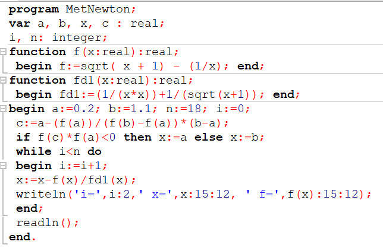
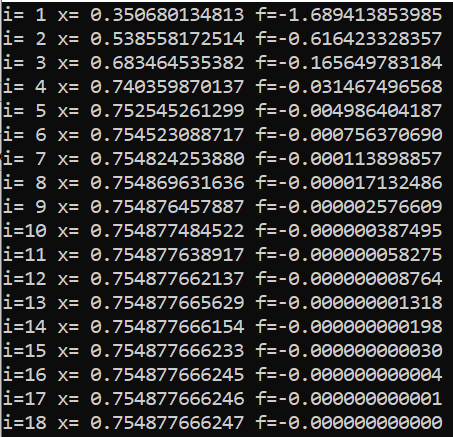
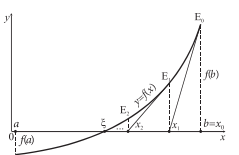

Metoda Newton
Urmează să se rezolve ecuaţia f (x) = 0 pentru x ∈ [0.1, 1.1]. Se va încerca rezolvarea problemei prin trasarea consecutivă a unor tangente la graficul funcţiei.

Introducând funcția și derivata ei, cu ajutorul iterației și formulelor am aflat intersecția graficului f cu axa Ox
Valorile după 18
iterații sunt:

Remarcăm că după 18 iterații inclusiv valoarea funcției devine 0 ceea ce ne indică la intersecția graficului cu axa Ox

Înapoi